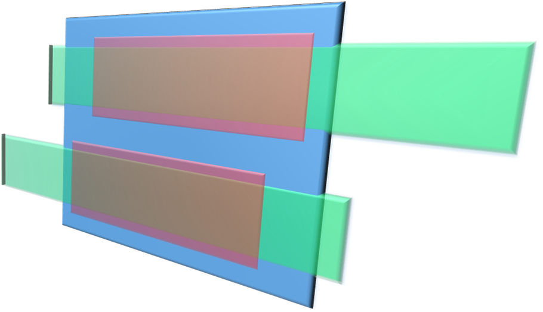
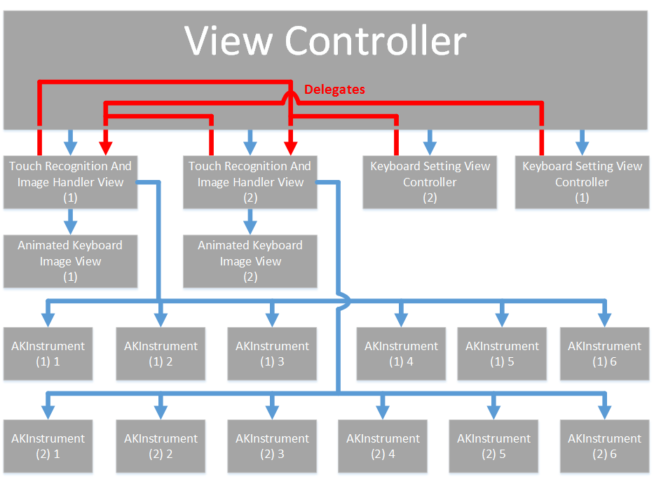

Additional Files |
|||||
|
For any of those that may be interested, we've included below some of the technical jargon that goes into making our apps, so that you can atleast have an idea of whats going on behind the scenes! Dual Play is a keyboard synthesis app that employs a set of coding files known as "AudioKit" to handle its audio output. It is designed in Apple's own development environment, XCode, and is a completely self contained application.

Blue: Main view controller
At the core of Dual Play are two customised Touch Recognition And Image Handler classes (one for each keyboard) that inherit from apple's UIView object. Each of these classes implements methods to handle touches that have begun, moved, or just ended within the view's boundries. Parameters, such as location, are logged within a series of CFMutableDictionarys for each touch that has started / moved since the last time step, with the parameter's key equal to the memory addres of that particular touch. This allows us to track the movement of independant touches and not get confused by which finger is which.Green: Keyboard image views Red: Touch Recognition And Image Handler Veiws Next comes the clever bit. As demonstrated in the image to the right, the illuion of playing on a keyboard comes from a customised UIImage object held within each Touch Recognition And Image Handler (TRAIH) class. This UIImage object contains the image of a full length keyboard, the same height as the TRAIH class view, but of variable width. (The variable width controlls the "key size" setting!) The TRAIH class trims, or crops, the parts of the keyboard image that do not fit inside its view, hence only showing one or two octaves to the user at a time. By using knowledge of the location of a touch within the TRAIH view, the geometary of the keyboard image, the location of the keyboard image (its left / right positioning), and the width of the keyboard image we are able to use maths to find the "key" that a user's finger is currently pressed on. The required frequency output can then found with the knowledge of which keyboard notes produce what frequencies. This information is simply stored in an array, and is accessed once the program knows which key a user is pressing. This frequency and amplitude information is then finally passed to the AudioKit engine. AudioKit is a set of coding files that interfaces between a programmer's code, and Apple's "Core Audio". Core Audio is the code required to input and output audio from an app and is handled sample by sample, amplitude by amplitude. AudioKit interfaces this, making coding for audio more user-friendly. It handles the individual sample levels required by Core Audio on behalf of the programmer, giving them to option instead to request higher level audio functions such as a sine wave, or individual notes. It is, in a way, similar to Apple providing you a pre-made UIButton, instead of forcing you to code the object yourself! Ontop of its more basic functinality, AuioKit also provides the user the option to inplement a set of more complex pre-coded sounds. By creating a new custom class which inherits from AudioKit's "AKInstrument", a programmer can add oscilators and parameter variables to this class to create a virtual instrument. Oscilators within an instrument class should be of an "Operation" type, for instance AKFlute or AKPluckedString. These are complex physical models or mathematical operations that generate signals within an AKInstrument and can have parameters, such as amplitude or frequency. By allocating operation parameters to a custom AKInstrument class property, a programmer can programatically change the properties of the sound produced through AudioKit by overwritting class property values. Further to AKInsruments, AudioKit also provides the functionality to play notes (AKNotes) via its instruments. AKNotes are similar to AKInstruments in that they can both have properties (amplitude, frequency...) however AKNotes do not include any operations. AKInstruments can be coded to play particular AKNotes, with the advantage that a single AKInstrument can play multiple notes simultaniously, facilatating memory efficient polyphony. To do this, a second class, which inherits from "AKNote", is usually implemented within the same coding file as the programmer's custom AKInstrument Class. Similar to before, custom AKNote class properties are then defined within the custom AKNote class. An instance of this custom AKNote class that then be instantiated from within the custom AKInstrument class and operation parameters assigned to the custom AKNote properties instead. An instance of the custom AKInstrument can then be instructed to play an instance of the custom AKNote. This means that rather than altering the parameters for an entire AKInstrument each time one whishes to play a sound of differing frequency, one needs only to send the instrument a correctly attributed AKNote. The sound produced will have the properties of the AKNote, but a timbre governed by the operations inside the AKInstrument. Perhaps at this point its best to follow with a basic psudo code example. Please note, that this is not functioning code, it is simply to illistate the main points discussed above to implement an AKInstrument with AKNotes.
From here, it is very simple to use this instrument from within an apps main code. After declaring and initialising both the custom AKInstrument and custom AKNote a programmer can assign values to the note properties, and play the note through the instrument. Please note that in the following example, line 3 is required by AudioKit as its origins lie in a programming language called CSound, and this is something that must be done to include the instrument in the output.

Again, Please be aware that this is not functioning code, but just an example to illustrate key points.This is how each of the available instruments is implemented within DualPlay. It gets a little more complicated as multiple instances of notes are required in order to play multiple keys at once on a keyboard, but the basic idea remains the same. As for the rest of the code, the diagram to the right shows the basic class hierarchy. You can see how delegates are used to implement setting changes in the keyboards from within the settings popup menu and how each keyboard has its own set of handler classes and intrument instances. For a more thoughrough explanation of how the program works however, please refer to the detailed comments provided within the program's source code. |
||||